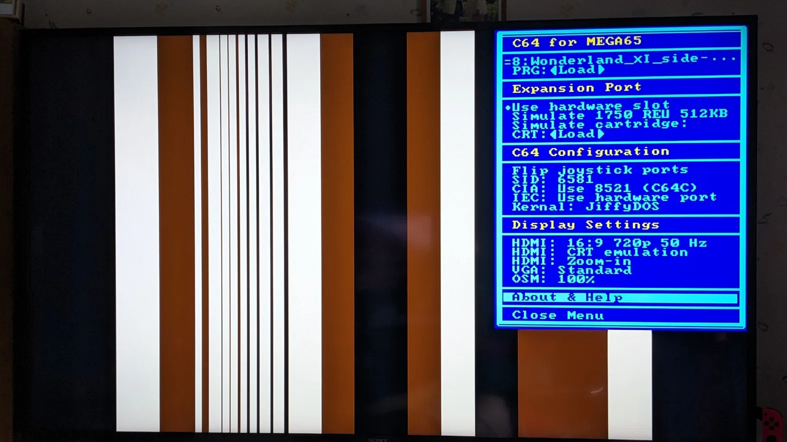
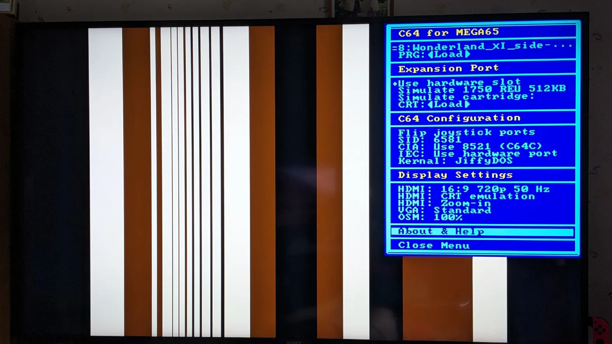

C64 Core for MEGA65 - User Documentation
IMPORTANT NOTICE
If you are using a HDMI-connection and the C64 Core displays vertical bars instead of the real picture, this is a known bug in the public released core and there is a fix available. Please click here.
 
Search function and Table of Contents
This documentation can be searched with the Search Box on the upper border. It will show you all pages that contain your search term. You then need to use the search function of your browser on these pages to further find the info you need. Most of the documentation has detailed table of contents for the page you are on on the right side.
Help! Something does not work!
There is an extensive troubleshooting guide included with this documentation which a lot of “behind the scenes” knowledge too.
And now, finally: Welcome!
Welcome to the user documentation for the C64 for MEGA65 Core. This website collects all info about the installation, usage and specific compatibilities. For some more technical deep dives into the internals of the Core, please consult the Github project at: https://github.com/MJoergen/C64MEGA65/ where you can find further information for developers and contributors.
To get a glimpse of what the C64 core can do for you, watch this trailer on YouTube.
Please find a list of all the pages of the documentation on the left side of the screen. Tables of contents for each page are on the right side of the screen.
If you are already using the core but have a specific problem, please check the Troubleshooting and FAQ page first.
This documentation is based on the inital documentation by MJoergen and sy2002 and has been enhanced, reformated and published by Boris Schneider-Johne. Please send any comments either directly to boris@dreisechzig.net or join us in the discussion of this Core on Discord at:
https://discord.com/channels/719326990221574164/794775503818588200
Future development and enhancements
Please read here about the plans for the future.